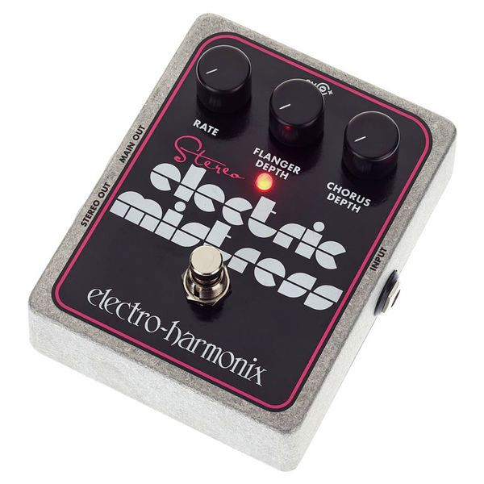

⚡ Pas le temps : le résumé 30 secondes
- 👑 EHX Electric Mistress (1976) — la reine. Le mode Filter Matrix qui fige le sweep. Le son de Comfortably Numb.
- 💪 Boss BF-2 (1980) — l'increvable. 60-120 € d'occasion, indestructible.
- 🎛️ MXR M117 (1976) — le studio-grade. 5 potards, le whoosh d'Unchained.
Le flanger est l'effet le plus mal compris de toute l'histoire de la guitare. Tout le monde l'a déjà entendu — ce whooshhh de turbine d'avion qui balaie le spectre sonore pendant l'intro de Walking on the Moon, ce truc qui ondule sur Comfortably Numb. Et pourtant, personne ne sait vraiment le distinguer d'un chorus ou d'un phaser.
Dans cet article, on te raconte pourquoi le flanger est l'effet le plus rock'n'roll de tous, comment quatre maîtres absolus en ont fait leur signature, et quelles sont les 3 pédales à connaître absolument en 2026. Accroche-toi : on décolle. Si tu débutes, passe par notre guide des pédales d'effets.
Les 3 flangers essentiels

1976 · Analog BBD · La Reine
Electric Mistress
Electro-Harmonix
La première pédale flanger live de l'histoire et, 50 ans plus tard, toujours la meilleure. Trois potards et un secret : le switch Filter Matrix qui fige le sweep en mid-position, créant ce halo métallique fixe. C'est lui qui rend Comfortably Numb reconnaissable en 0,3 seconde.
🎸 Qui l'a utilisée ?
David Gilmour sur tous les solos clean de The Wall. Andy Summers sur l'intro de Walking on the Moon — oui, c'est bien un flanger, pas un chorus : EHX lui a sorti un modèle signature pour que le débat s'arrête. John Frusciante sur Californication.

1980 · Analog · L'increvable
BF-2 Flanger
Boss
La pédale flanger la plus vendue de l'histoire : indestructible, abordable, et elle sonne. Fabriquée de 1980 à 2001, on en trouve partout d'occasion entre 60 et 120 €. Un BBD analogique MN3207 derrière 4 potards (Manual, Depth, Rate, Resonance) qui couvre tout le spectre.
🎸 Qui l'a utilisée ?
Prince en avait une sur tous ses pedalboards depuis l'ère 1999 — son LFO module la basse sur If I Was Your Girlfriend. Billy Duffy (The Cult) la décrit comme le cœur du son de Fire Woman. Et à peu près 95 % des guitaristes de bar du monde occidental.

1976 · Studio-grade · Le Whoosh
M117 Flanger
MXR / Dunlop
Cinq potards (Manual, Width, Speed, Regen, Mix), la réputation de flanger le plus polyvalent du marché, et le grain qu'on entend partout dans le rock des années 80. Plus précis que la Mistress, plus expressif que la BF-2 — la M117 est littéralement ce que les studios pros utilisaient.
🎸 Qui l'a utilisée ?
Eddie Van Halen a fait toute sa carrière dessus — le whoosh d'Unchained, c'est elle. Alex Lifeson sur The Spirit of Radio et Red Barchetta, ce flange qui claque comme un coup de fouet. Steve Lukather, The Edge, Adrian Belew.